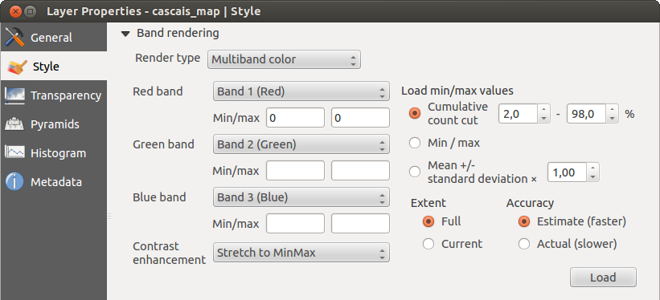

Proprietà raster
Per visualizzare ed impostare le proprietà di un raster, fai doppio click sul nome del raster nella legenda o cliccaci sopra con il tasto destro e scegli Proprietà dal menu contestuale. Si aprirà cosi la finestra di dialogo Proprietà del layer.
Ci sono diversi menu nella finestra di dialogo:
Generale
Stile
Trasparenza
Piramidi
Istogramma
Metadati

Menu Generale
Informazioni del layer
Il menu Generale contiene informazioni basilari del raster selezionato, inclusa la sorgente del file, il nome visualizzato nella legenda (che puoi modificare) e il numero di colonne, righe e valori nulli.
Sistema Riferimento Coordinate
Qui puoi trovare il sistema di riferimento spaziale (SR) visualizzato in formato stringa PROJ.4. Se l’impostazione non è corretta la puoi modificare con il pulsante [Specifica].
Visibilità dipendente dalla scala
In questo menu puoi attivare la funzione che imposta la visibilità del raster in funzione della scala. Spuntando la casella di controllo puoi impostare l’intervallo di scala in cui vuoi che il raster venga visualizzato nella mappa.
Nella parte inferiore puoi vedere un’anteprima del raster, la sua simbologia e la tavolozza.
Menu Stile
Visualizzazione banda
KADAS offre quattro tipologie di Visualizzazione del layer. La scelta dipende dal tipo di dato.
Colori banda multipla - se il file è caricato come multibanda e ha diverse bande di colori (per esempio un’immagine satellitare con molte bande diverse)
Tavolozza - se un file ha una tavolozza indicizzata (per esempio una mappa topografica digitale)
Banda singola grigia - (una banda) l’immagine verrà visualizzata in grigio: KADAS sceglierà questo tipo di visualizzazione se il file non ha né bande multiple né una tavolozza indicizzata né una tavolozza continua (comune per una mappa dei rilievi)
Banda singola falso colore - puoi usare questo visualizzatore per i file che hanno una tavolozza continua o una mappa di colore (per esempio una mappa delle altimetrie)
Colori banda multipla
Con il visualizzatore colore banda multipla verranno visualizzate le tre bande selezionate dell’immagine, ognuna delle quali corrisponde alle componenti rosso, verde e blu che verranno usate per creare i colori dell’immagine stessa. Puoi scegliere fra diversi metodi di Miglioramento contrasto: ‘Nessun miglioramento’, ‘Stira a MinMax’, ‘Stira e taglia a MinMax’ e ‘Taglia a MinMax’.

Questa sezione offre un’ampia gamma di opzioni per modificare l’aspetto del tuo raster. Prima di tutto scegli l’estensione dell’immagine da Estensione e poi premi il pulsante [Carica]. KADAS può scegliere l’Accuratezza stimando i valori Min e Max tramite i pulsanti Stimato (veloce) e Attuale (lento).
Ora puoi impostare i colori con l’aiuto della sezione Carica i valori min/max. Molte immagini hanno pochi valori estremi. Puoi eliminare questi outlier con l’impostazione  Cumulative count cut. L’intervallo standard è impostato dal 2% al 98% dei valori del file e può essere adattato manualmente. Con questa impostazione potrebbero sparire i caratteri grigi. Con l’opzione
Cumulative count cut. L’intervallo standard è impostato dal 2% al 98% dei valori del file e può essere adattato manualmente. Con questa impostazione potrebbero sparire i caratteri grigi. Con l’opzione  Min/max, KADAS crea una tabella di colori con tutti i valori dell’immagine originale (per esempio KADAS crea una tabella di colori con 256 valori, se la tua immagine ha bande a 8 bit). Puoi anche creare la tua tabella dei colori usando l’opzione Media +/- deviazione standard x
Min/max, KADAS crea una tabella di colori con tutti i valori dell’immagine originale (per esempio KADAS crea una tabella di colori con 256 valori, se la tua immagine ha bande a 8 bit). Puoi anche creare la tua tabella dei colori usando l’opzione Media +/- deviazione standard x  . In questo modo solamente i valori inclusi nella deviazione standard o in multipli della deviazione standard verranno considerati nella tabella dei colori. Questo è molto utile quando hai una o due celle con valori molto grandi che avrebbero un impatto negativo nella visualizzazione del raster.
. In questo modo solamente i valori inclusi nella deviazione standard o in multipli della deviazione standard verranno considerati nella tabella dei colori. Questo è molto utile quando hai una o due celle con valori molto grandi che avrebbero un impatto negativo nella visualizzazione del raster.
Le stesse impostazioni sono valide anche per l’estensione Attuale.
Visualizzare una singola banda di un raster multibanda
Se vuoi vedere solamente una banda singola di un’immagine multibanda (per esempio, rossa) potresti pensare di impostare le bande verde e blu come “Non impostato”. Ma questo non è il miglior modo di agire. Per visualizzare la banda rossa, seleziona il visualizzatore ‘Banda grigia singola’ e poi seleziona il rosso come colore da usare al posto del grigio.
Tavolozza
Questo è il visualizzatore standard per i file a banda singola che hanno già una tavola di colori, dove a ogni valore dei pixel è associato un determinato colore. In questo caso, la tavolozza viene visualizzata automaticamente. Se vuoi cambiare i colori assegnati a certi valori fai semplicemente doppio click sul colore e si aprirà cosi la finestra Seleziona colore. In KADAS 2.2 puoi anche assegnare un’etichetta ai valori dei colori. L’etichetta comparirà cosi nella legenda.

Miglioramento contrasto
Quando aggiungi un raster di GRASS, l’opzione Miglioramento contrasto è sempre impostata su Stira a MInMax anche se hai impostato altri valori nelle opzioni di KADAS.
Banda singola grigia
Questo visualizzatore ti permette di visualizzare un raster a banda singola con un Gradiente di colore: ‘Da nero a bianco’ o ‘Da bianco a nero’. Puoi selezionare il valore Min e quello Max scegliendo prima l’opzione Estensione e poi premendo il pulsante [Carica]. KADAS può scegliere l’Accuratezza stimando i valori Min e Max tramite i pulsanti Stimato (veloce) e Attuale (lento).

Nella sezione Carica i valori min/max puoi scegliere la tabella dei colori. Puoi eliminare questi outlier con l’impostazione Cumulative count cut. L’intervallo standard è impostato dal 2% al 98% dei valori del file e può essere adattato manualmente. Con questa impostazione potrebbero sparire i caratteri grigi. Puoi effettuare altri cambiamenti con le impostazioni Min/max e Media +/- deviazione standard x . Mentre la prima crea una tabella di colori con tutti i valori dell’immagine originale, la seconda opzione che una tabella di colori in cui vengono considerati solamente i valori che ricascano all’interno della deviazione standard o a un multiplo di questa. Questo è molto utile quando hai una o due celle con valori molto grandi che avrebbero un impatto negativo nella visualizzazione del raster.
Banda singola falso colore
Questa è l’opzione di visualizzazione per i file a banda singola, inclusa una tavolozza continua. Puoi anche creare mappe di colori singoli per le bande singole.

Sono disponibili tre tipologie di interpolazione di colore:
Discreto
Lineare
Esatto
Nella parte sinistra, il pulsante  Aggiungi un valore manualmente aggiunge un valore alla tabella dei colori. Il pulsante
Aggiungi un valore manualmente aggiunge un valore alla tabella dei colori. Il pulsante  Rimuovi la riga selezionata cancella un valore dalla tabella dei colori e il pulsante
Rimuovi la riga selezionata cancella un valore dalla tabella dei colori e il pulsante  Ordina gli elementi della mappa dei colori ordina i colori della tabella in funzione dei valori dei pixel e dei valori della colonna. Facendo doppio click sul valore presente nella colonna potrai inserire un valore specifico. Facendo invece doppio click su un colore, potrai scegliere un colore specifico da assegnare a quel valore. Inoltre puoi anche aggiungere un’etichetta per ogni colore, ma questa etichetta non verrà visualizzata quando userai lo strumento Informazioni elementi. Puoi anche cliccare sul pulsante
Ordina gli elementi della mappa dei colori ordina i colori della tabella in funzione dei valori dei pixel e dei valori della colonna. Facendo doppio click sul valore presente nella colonna potrai inserire un valore specifico. Facendo invece doppio click su un colore, potrai scegliere un colore specifico da assegnare a quel valore. Inoltre puoi anche aggiungere un’etichetta per ogni colore, ma questa etichetta non verrà visualizzata quando userai lo strumento Informazioni elementi. Puoi anche cliccare sul pulsante  Carica mappa colore dalla banda, che prova a caricare la tabella dalla banda (se questa esiste). Puoi usare i pulsanti
Carica mappa colore dalla banda, che prova a caricare la tabella dalla banda (se questa esiste). Puoi usare i pulsanti  Carica mappa colore da file oppure
Carica mappa colore da file oppure  Esporta mappa colore su file per caricare una tabella di colori esistente o per salvarne una per le sessioni successive.
Esporta mappa colore su file per caricare una tabella di colori esistente o per salvarne una per le sessioni successive.
Nella parte destra, la sezione Genera nuova mappa colore ti permette di creare mappe di colore categorizzate. Per la Modalità  ‘Intervallo uguale’ devi solamente scegliere il numero di classi e premere il pulsante Classifica. Puoi invertire i colori spuntando la casella di controllo
‘Intervallo uguale’ devi solamente scegliere il numero di classi e premere il pulsante Classifica. Puoi invertire i colori spuntando la casella di controllo  Inverti. Se hai scelto la Modalità ‘Continuo’, KADAS crea automaticamente le classi in funzione dei valori Min e Max. Puoi definire i valori Min/Max con l’aiuto della sezione Carica i valori min/max. Molte immagini hanno pochi valori estremi. Puoi eliminare questi outlier con l’impostazione Cumulative count cut. L’intervallo standard è impostato dal 2% al 98% dei valori del file e può essere adattato manualmente. Con questa impostazione potrebbero sparire i caratteri grigi. Con l’opzione Min/max, KADAS crea una tabella di colori con tutti i valori dell’immagine originale (per esempio KADAS crea una tabella di colori con 256 valori, se la tua immagine ha bande a 8 bit). Puoi anche creare la tua tabella dei colori usando l’opzione Media +/- deviazione standard x . In questo modo solamente i valori inclusi nella deviazione standard o in multipli della deviazione standard verranno considerati nella tabella dei colori.
Inverti. Se hai scelto la Modalità ‘Continuo’, KADAS crea automaticamente le classi in funzione dei valori Min e Max. Puoi definire i valori Min/Max con l’aiuto della sezione Carica i valori min/max. Molte immagini hanno pochi valori estremi. Puoi eliminare questi outlier con l’impostazione Cumulative count cut. L’intervallo standard è impostato dal 2% al 98% dei valori del file e può essere adattato manualmente. Con questa impostazione potrebbero sparire i caratteri grigi. Con l’opzione Min/max, KADAS crea una tabella di colori con tutti i valori dell’immagine originale (per esempio KADAS crea una tabella di colori con 256 valori, se la tua immagine ha bande a 8 bit). Puoi anche creare la tua tabella dei colori usando l’opzione Media +/- deviazione standard x . In questo modo solamente i valori inclusi nella deviazione standard o in multipli della deviazione standard verranno considerati nella tabella dei colori.
Visualizzazione colore
Per ogni Visualizzazione banda, è disponibile una Visualizzazione colore.
Puoi anche ottenere effetti speciali per i tuoi raster usando una delle modalità fusione.
Ulteriori impostazioni possono essere fatte modificando la Luminosità, la Saturazione e il Contrasto. Puoi usare anche l’opzione Scala di grigi dove puoi scegliere fra ‘Per chiarezza’, ‘Per luminosità’ e ‘Per media’. Puoi modificare la ‘Forza’ per ogni tonalità della tabella dei colori.
Ricampionamento
La sezione Ricampionamento ha effetto quando ingrandisci o rimpicciolisci l’immagine. I metodi di ricampionamento ottimizzano l’aspetto della mappa perché calcolano una nuova matrice di grigi attraverso una trasformazione geometrica.

Applicando il metodo ‘vicino più prossimo’ la mappa potrebbe avere una struttura con molti pixel quando viene ingrandita. Questo aspetto può essere migliorato usando i metodi ‘Bilineare’ o ‘Cubico’ perché creano delle geometrie più appuntite e offuscate. Il risultato è un’immagine più morbida. Puoi applicare questo metodo, per esempio, a mappe raster topografiche.
Menu Trasparenza
KADAS riesce a visualizzare ogni raster con differenti livelli di trasparenza. Usa il cursore trasparenza  per impostare il livello di trasparenza che desideri. Questa opzione è molto utile se vuoi sovrapporre diversi raster (per esempio una mappa dei rilievi sovrapposta a un raster classificato). In questo modo puoi simulare un effetto tridimensionale.
per impostare il livello di trasparenza che desideri. Questa opzione è molto utile se vuoi sovrapporre diversi raster (per esempio una mappa dei rilievi sovrapposta a un raster classificato). In questo modo puoi simulare un effetto tridimensionale.
Inoltre puoi inserire nel menu Valori nulli aggiuntivi un valore che deve essere trattato come Valore nullo.
Puoi definire la trasparenza in maniera ancora più dettagliata e personalizzata nella sezione Opzioni di trasparenza personalizzate, nella quale puoi impostare il grado di trasparenza di ogni singola cella (o pixel).
Per esempio, vogliamo impostare l’acqua del file landcover.tif con una trasparenza del 20%. Questi sono i passi necessari:
Carica il file
Apri la finestra di dialogo Proprietà facendo doppio click sul nome del raster nella legenda o cliccando su di esso con il tasto destro del mouse e scegliendo Proprietà dal menu contestuale.
Seleziona il menu Trasparenza.
Scegli ‘Nessuno’ dal menu Banda trasparenza.
Clicca sul pulsante
Aggiungi valori manualmente. Apparirà cosi una nuova riga nell’elenco.Inserisci il valore nelle colonne ‘Da’ e ‘A’ (nell’esempio viene usato 0) e aggiusta la trasparenza al 20%.
Clicca sul pulsante [Applica] per visualizzare il risultato.
Ripeti i passaggi 5 e 6 per aggiustare più valori con trasparenze personalizzate.
Come puoi vedere è molto semplice impostare una trasparenza personalizzata, però richiede comunque un po’ di lavoro. Proprio per questo puoi usare il pulsante  Esporta su file per salvare la lista dei valori su un file esterno. Il pulsante Importa da file ti permette di caricare le impostazioni di trasparenza e applicarle al raster selezionato.
Esporta su file per salvare la lista dei valori su un file esterno. Il pulsante Importa da file ti permette di caricare le impostazioni di trasparenza e applicarle al raster selezionato.
Menu Metadati
La scheda Metadati mostra una serie di informazioni sul raster, incluse le statistiche di ogni banda. Da questo menu hai accesso a diverse sezioni: Descrizione, Assegnazione, URL Metadati e Proprietà. Nella sezione Proprietà le statistiche sono ottenute da una base ‘che si deve ancora conoscere’, quindi è meglio che le statistiche di questo raster non siano ancora state calcolate.